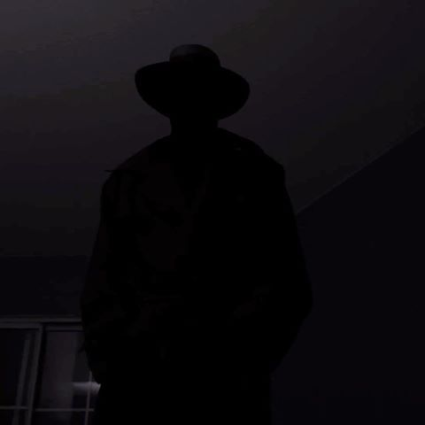

#12 (The man who was wearing cap)

In the shadows, a man with cap,
A figure cloaked in darkness, a sinister trap,
His presence loomed, bringing fear,
An evil force that drew trauma near.
...
His eyes held malice, devoid of light,
A predator lurking, ready to strike,
With twisted pleasure, he inflicted pain,
Leaving scars that forever remain.
His touch, a venomous sting,
An encounter that shattered everything,
Innocence stolen, trust torn apart,
His wicked deeds etched deep in my heart.
...
His words, a weapon sharp and cruel,
Like daggers piercing through my soul,
He whispered torment, twisted lies,
A master manipulator in disguise.
His actions spoke of malintent,
Leaving me haunted, broken and spent,
In the depths of despair, I trembled and shook,
Trapped in the web this evil man took.
...
But though his darkness may cast its shade,
I refuse to let his power pervade,
For in my strength, I find my might,
To rise above, to reclaim my light.
No longer defined by his malevolence,
I break free, embracing resilience,
His grasp may linger, but I'll heal,
Transforming scars into strength and zeal.
...
In the face of evil, I'll stand tall,
Defying the shadows that once enthralled,
For I am more than a victim's plight,
A survivor, a beacon of hope and light.
Though scars may mark my journey's chart,
I'll rewrite the story, healing my heart,
And in my triumph, I'll find release,
Embracing love, strength, and inner peace.
...
For I am more than a victim's plight,
A survivor, embracing courage's light,
The evil man's power will fade away,
As I reclaim my life, day by day.